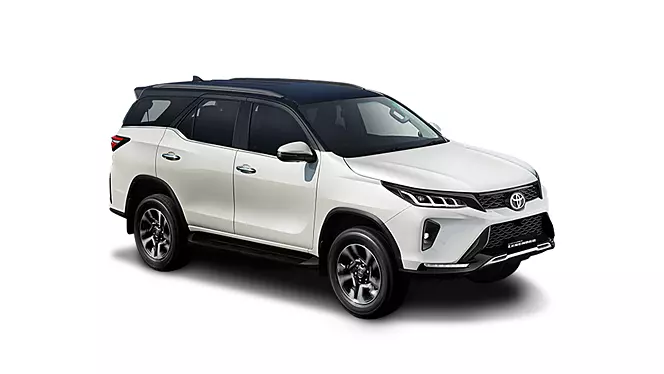
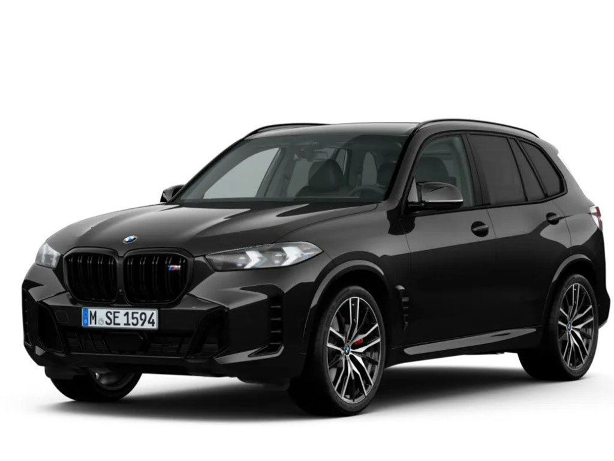
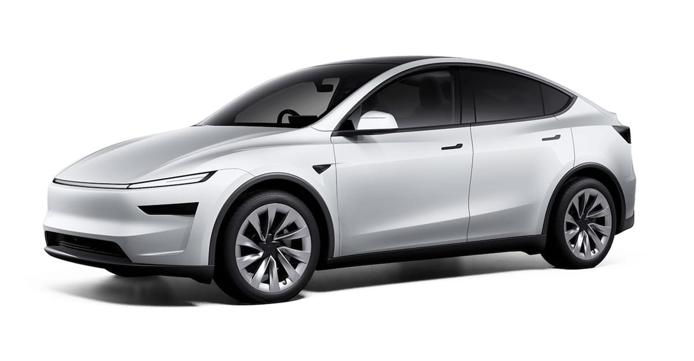
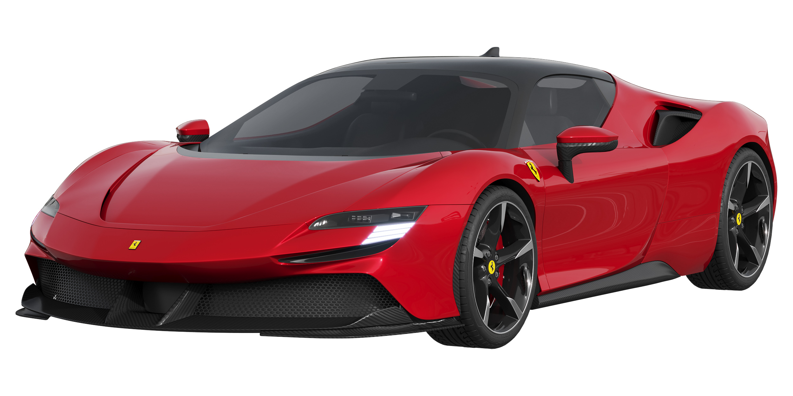
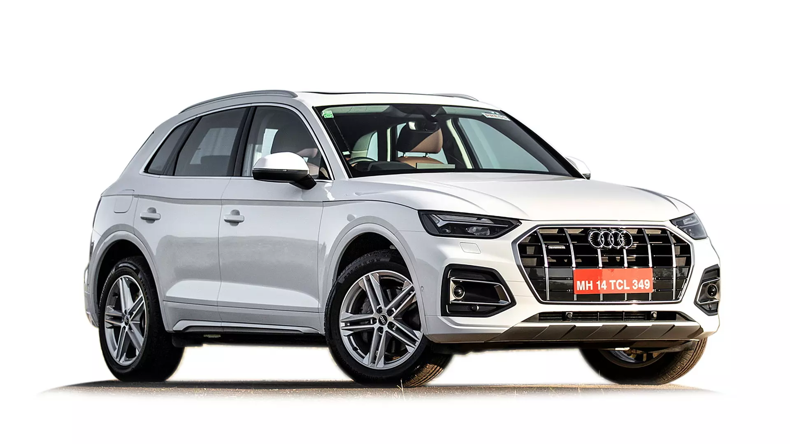

<h1> CAR BRANDS</h1>

<p> FORD </p>

<p> TOYOTA </p>

<p> BMW </p>

<P> TESLA </P>

<p> JEEP </p>

<p> FERRARI </p>

<p> AUDI </p>

<p> LAMBORGHINI</p>


<p> which one do you prefer?</p>
<button>FORD</button>
<button>TOYOTA</button>
<button>BMW</button>
<button>TESLA</button>
<button>JEEP</button>
<button>FERRARI</button>
<button>AUDI</button>
<button>LAMBORGHINI</button>